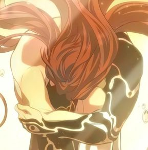
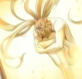
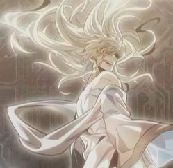
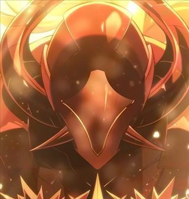
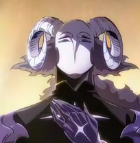
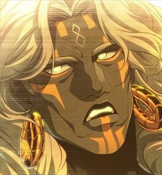
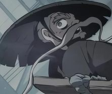
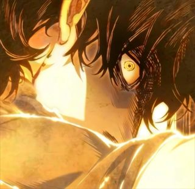
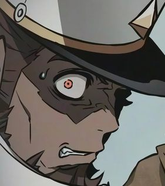

Personnages 55
Jaehwan
Personnage Principal

Kairos
Dieu de l'errance
Schindler
Monarque de la dureté

Behit
Dieu du voyage

Kainark
Monarque de la paresse et ancien conducteur du métabus

Deus
Un des trois anciens dieux
Siren Armlet
Cauchemar, Compagnon de Jaehwan et petite-fille de Mullark

Mullark Armlet
Cauchemar, Grand-père de Siren, un des 13 grand-maîtres de tours

Gestalt
Un des trois anciens dieux
Catastrophe
Un des trois anciens dieux

Chungeo
Compagnon de Jaehwan
Runard
Compagnon et Adepte de Jaehwan
Seolha
Compagnon de Jaehwan et ancien membre de la fissure
"3751"
3 751ème Jaehwan, n'a fait que donner des coups pendant 100 millions d'années

"8741"
8 741ème Jaehwan, n'a fait que découper pendant 320 millions d'années
"63123"
63 123ème Jaehwan, n'a fait qu'être nu
"66666"
66 666ème Jaehwan, a enduré 3 milliards d'années seul dans la cascade du temps

James
Instructeur, garde qui a contrôlé jaehwan du point de contrôle de nord
Caiman
Compagnon de Jaehwan rencontré dans le chaos
Maillad
Souverain de la Fissure, cofondateur avec Buddha et Nameless. A "tué" Big Brother. Monde unique : [Mer de sang remplie de cadavres]. Porte le Deus Ex Machina
Nameless
Dieu, cofondateur de la Fissure passé du côté des Abysses. Auteur de [Hymne au syndrome de l'imitation de dieu]
Buddha
Dieu de la réincarnation, un des sept grands dieux et cofondateur de la Fissure. Histoire unique : [Réincarnation]
Droiyan
Dieu Dragon, [Dragon à la Flamme Noire]. Mort face à Buddha
Caravan
Dieu des Flammes aux cheveux rouges, [Armure à la Flamme Rouge]. A hérité d'un trône des huit dieux. Blessé par Buddha
Imai
Un des trois capitaines de la Fissure. Mort après avoir perdu son monde unique
Jerome
Le plus fort des monarques suprêmes de la Terre toute-puissante. Vaincu par Jaehwan
Varkant
Monarque suprême au visage hideux, un dragon. Compétence transcendante [Majesté du Dragon]. Battu par Runard
Miriel
Dirigeant de la Fissure, envoyé au septième site (Epoche) avec quatre monarques suprêmes
Yoonhwan
Ami de Jaehwan, ancien membre de la Fissure et messager de la destruction. [Rafale de vent Puyuu]. Sur Terre, ami de Jaehwan à l'université
Han Seoyul
Amie de Jaehwan sur Terre, décrite comme une grande beauté. Personnage de son novel
Carlton
Ancien subordonné de Jaehwan dans le Chaos. Sa justice l'oblige à le suivre. Monde unique : [Forteresse de Gorgon]
Kasim
Surnommé "Médecin divin". Ancien camarade de Chungheo
Russel
Une des sept étoiles. Sanctuaire : [Mer Profonde]
Edan
Dieu des corbeaux. [Barrage de corbeaux], sanctuaire [Tombe du Corbeau]
Shiyu
Dieu des âges, "Vieux Ciel". Un des huit cieux
Thanatos
Dieu des morts, "Ciel Mortel". Un des huit cieux
Andersen
Déesse, considérée comme un [bon dieu] par l'ancien dieu fou
Ra-Hamad
Lié à l'entraînement sans fin menant à l'Oeil de Gestalt. Ses paroles sur la guerre des trois anciens dieux
Beastrain
Démon intermédiaire en costume noir, 8 152ème rang démoniaque, surnommé "Monsieur taquin". Cultivateur de la Forteresse des regrets. Voix de la flamme empoisonnée de Jaehwan
Samyung Garam
Monarque adaptateur qui doutait du système. A mis Maillad en garde contre Jaehwan
Jean-Paul
Jean-Paul de l'existence. Grand maître des cauchemars, créateur de la Tour des cauchemars. Dirige le Panopticon
Jorge
Jorge du virtuel. Dirige le Panopticon avec Mullark
Scalzi
Scalzi de l'univers. Dirige le Panopticon avec Mullark
Marus
Marus du jeu. Dirige le Panopticon avec Mullark
Melville
Cauchemar récemment devenu maître de la 4ème tour, "Moby Dick" (tour complétée par Chungheo)
Ignel
Ignel du crépuscule profond. Maître de l'atelier Crépuscule, a forgé le souverain absolu de Jaehwan. Disparu après la "catastrophe de Watchnold"
Jurhen
Habitant de Carpe Diem, proche de Kaiman
Eunsae
Compagnon de Runard au Comité gouvernant des abysses
Shin Mugeuk
Chef du clan Sans Limite (Murim)
Kang Hwang
Clan du Feu (Murim)
Yoon Yong
Clan de l'Eclair (Murim)
Le Professeur
Docteur du centre de conseil polyvalent qui suit Jaehwan sur Terre pendant dix ans
Seiji Sakamoto
Camarade de Carpe Diem qui a gravi la tour avec Jaehwan. Devenu professeur de lettres de Jaehwan sur Terre, sans souvenirs
Mère de Jaehwan
Mère de Jaehwan sur Terre, "Maman"
Hwang Inchan
Chef du département éditorial de l'équipe 1 de l'entreprise de web novels. Surnommé "Panique à l'épée". Sur Terre, aime les histoires de régression. Jaehwan et Seoyul le vouvoient, il les tutoie (ch. 259)
Tutoiement / Vouvoiement 23
| Personnage 1 | Relation | Personnage 2 |
|---|---|---|
| Jaehwan | Tu / Tu | Kainark |
| Jaehwan | Tu / Tu | Mullark Armlet |
| Gestalt | Tu / Tu | Deus |
| Gestalt | Tu / Tu | Catastrophe |
| Catastrophe | Tu / Tu | Deus |
| Jaehwan | Tu / Tu | Chungeo |
| Jaehwan | Tu / Vous | Runard |
| Jaehwan | Tu / Tu | Seolha |
| Jaehwan | Tu / Tu | "3751" |
| Jaehwan | Tu / Tu | "8741" |
| Jaehwan | Tu / Tu | "63123" |
| Jaehwan | Tu / Tu | "66666" |
| Jaehwan | Tu / Vous | James |
| Jaehwan | Tu / Tu | Caiman |
| Jaehwan | Tu / Tu | Maillad |
| Jaehwan | Tu / Tu | Mullark Armlet |
| Jaehwan | Tu / Tu | Beastrain |
| Jaehwan | Tu / Tu | Yoonhwan |
| Jaehwan | Tu / Tu | Han Seoyul |
| Jaehwan | Tu / Vous | Carlton |
| Jaehwan | Vous / Tu | Le Professeur |
| Vous / Tu | Hwang Inchan | Jaehwan |
| Vous / Tu | Hwang Inchan | Han Seoyul |
Techniques 36
| VA | VF | Détenteur | Détails |
|---|---|---|---|
| Eye of Gestalt | Oeil de Gestalt | Jaehwan | Trésor des trois anciens dieux |
| Deus ex machina | Deus Ex Machina | Jaehwan | Trésor des trois anciens dieux |
| Void Sword | Epée du vide | Jaehwan | Trésor des trois anciens dieux |
| [The World After the End] | [Le Monde Après la Fin] | Jaehwan | Monde unique |
| [Sword of Destruction] [Second Form] [Destruction] | [Epée de la destruction] [Seconde forme] [Destruction] | "66666" | |
| World Thrust | Coup Mondial | Jaehwan | |
| Slight Thrust | Coup Léger | Jaehwan | |
| Normal Slash | Découpe normale | Jaehwan | |
| [Les Cents Frappes à la Main] | Buddha | Attaque utilisant la pression de l'air | |
| [Réincarnation] | Buddha | Histoire unique : sacrifie un habit pour renaître, quelle que soit la cause de la mort | |
| [Les Cents Mains de Guanyin -- Extrême] [Roue du Dharma] | Buddha | Fait augmenter sa puissance mondiale | |
| [Dragon à la Flamme Noire] | Droiyan | Histoire du Dieu Dragon Droiyan | |
| [Armure à la Flamme Rouge] | Caravan | Histoire du Dieu des Flammes | |
| [Création d'une histoire : Rafale de vent Puyuu] [Attention décuplée] | Yoonhwan | Prise d'attention | |
| [Style d'épée de l'empereur des cieux] [Les 14 coups d'épée de la fleur du prunier] [Les 36 coups d'épée de la mer du sud] [L'art de l'épée du Taiji éclairé] [Les 13 coups de l'épée Dharma] | Chungheo | ||
| [Murim] | Chungheo | Déploiement du sanctuaire. Monde forgé par le sang et les âmes d'innombrables artistes martiaux | |
| [Barrage de corbeaux] | Edan | ||
| [Tombe du Corbeau] [Armure du corbeau] | Edan | Déploiement du sanctuaire d'Edan | |
| [Mer Profonde] | Russel | Déploiement du sanctuaire de Russel | |
| [Crépuscule] | Thanatos | Histoire du dieu des morts | |
| [Jeunesse] | Shiyu | Histoire du dieu des âges | |
| [Majesté du Dragon] | Varkant | Compétence de grade transcendant | |
| [Runard -- Imitation de style] [Déploiement du sanctuaire cible] | Runard | Syndrome de l'imitation de dieu : imite [Dissonance], [Flamme empoisonnée]... | |
| [Mer de sang remplie de cadavres] | Maillad | Monde unique. Ne permet aucun autre monde unique | |
| [Véritable annihilation] | Maillad | Monde unique créé avec ouroboros, réplique les histoires des autres | |
| [Perte de vraisemblance] | Deus | Coupe le lien entre le dieu et son avatar | |
| [Temps d'infection] | Maillad | Histoire unique de l'épée du vide. Infecte les avatars avec le [système] | |
| [Dissonance] | Gestalt | Manipule le sens des avatars | |
| [Deus Ex Machina : phase cachée] ⌜Système : exploitation⌝ [Ex machina -Phase 1- Deus] | Maillad | Transforme le monde unique de chacun en un [système] singulier | |
| [Forteresse de Gorgon] | Carlton | Monde unique. Crée un passage reliant le Chaos aux Abysses (renommée Carpe Diem) | |
| [Transmission de pouvoir mondiale] | Carlton | Donne de la puissance mondiale à un autre | |
| [Le Monde Après la Destruction] | Jaehwan | Déploiement complet du sanctuaire, après l'étape 5 de l'éveil (Preuve) | |
| Mutilation de constellations | Jaehwan | Ne parvient pas à déchirer l'obscurité de la cascade du temps | |
| Coup Moyen Coup Fort Coup Planétaire | Jaehwan | Coups enseignés à Carpe Diem | |
| Ouroboros | Jaehwan | Histoire du dieu nu (porter les vêtements du dieu nu) | |
| [Nudité] | "63123" | Pouvoir de la nudité |
Vocabulaire 60
Système
Arbre des illusions
Big brother
Tour des cauchemars
Puissance mondiale
Transcendant
Jeu des existences
Atelier
Cultivation
Adaptateurs
Eveillés
Eveil
Questionnement
1ère étape de l'éveil
Compréhension
2ème étape de l'éveil
Abandon de soi
3ème étape de l'éveil
Théorie
4ème étape de l'éveil
Preuve
5ème étape de l'éveil
Flamme empoisonnée
Arme spirituelle de Jaehwan
Beastrain
Manager de la forteresse des regrets
Monde unique
Habits
L'Original
Modification
6ème étape de l'éveil
Comité gouvernant des abysses
armée révolutionnaire blanche
Carpe Diem
Forteresse du Chaos
Fissure
Organisation fondée par Buddha, Nameless et Maillad pour abattre Big Brother
Souverain de la Fissure
Titre de Maillad
Messagers de la destruction
Groupe de Jaehwan. Menace de rang 1 pour la Fissure
Monarque suprême
Rang des plus puissants de la Terre toute-puissante (Jerome, Varkant)
Sept grands dieux
Les plus grands dieux des Abysses (dont Buddha, Droiyan, Caravan)
Trois anciens dieux
Deus, Gestalt et Catastrophe
Trois trésors sacrés
Oeil de Gestalt, Epée du vide, Deus Ex Machina
Huit cieux
Dieux de la Terre toute-puissante (Shiyu, Thanatos...)
Sept étoiles
Titre de Russel
Gigantes
Robot géant des Abysses avec cockpit, augmente la puissance mondiale
Déploiement du sanctuaire
Manifestation du monde unique
Histoire
Capacité d'un dieu ou d'un éveillé. Les histoires uniques sont écrites entre crochets
Adepte
Fidèle d'un dieu
Avatar
Émissaire d'un dieu en son absence
Syndrome de l'imitation de dieu
Maladie des Abysses. Seule chose pouvant résister au [système]
Dieu fou
Désigne toute la tribu éternelle
Évaluation de rang
Système du Comité : les dieux sont classés selon l'index de bonheur de leurs adeptes
Salle de la grande assemblée
Structure des Abysses conçue par le Comité. Les [grandes histoires] adoptées influencent tous les Abysses
Little brother
Réseau créé par Big Brother (forum des dieux)
Pierre de retour
Objet permettant de retourner en arrière, utilisé dans la tour (77ème étage)
Fruit
Pluie dorée tombant du ciel déchiré, trésor contenant la vie
Hibernation
Histoire des démons vivant longtemps, aide à endurer le poids des années
Rang démoniaque
Classement des démons (Beastrain : 8 152ème)
Maître de la forteresse
Titre de Jaehwan
Roi solitaire
Surnom de Jaehwan
1 131ème Big Brother
Titre donné à Jaehwan par Mullark
Trouble délirant
Diagnostic donné à Jaehwan sur Terre
Concours littéraire du Nouveau Printemps
Concours d'écriture auquel le Professeur pousse Jaehwan à participer (ch. 257)
Premier Cauchemar
[Premier Cauchemar] : nom lié à la réalité de Jaehwan (ch. 258)
Blade Walker
<Blade Walker> : premier groupe de raid de l'expédition, organisé par Hwang Inchan quand la Tour s'est ouverte (ch. 259)
Marcheur
Walker : personne qui gravit la Tour des cauchemars (ch. 259)
Panique à l'épée
"Sword Panic" : surnom de Hwang Inchan, avant la Terre (ch. 259)
Les 15 minutes d'Andy Warhol
Citation que Hwang Inchan répète comme un mantra (ch. 259)
Histoires de régression
Genre de web novel préféré de Hwang Inchan ; genre que Jaehwan déteste le plus (ch. 259)
Lieux 23
Abysses
Métabus
Terre toute-puissante
Forteresse des regrets
Cascade du temps
Panopticon
Centre de l'arbre des illusions
Chaos
Régions reculées
Premier Cauchemar
Epoche
7ème site des Abysses
Nuit tropicale
3ème site des Abysses
Muspelheim
Niveau profond du 3ème site
Forteresse de Gorgon
Ancien nom de Carpe Diem (Chaos)
Salle de la grande assemblée
Abysses
Moby Dick
Monde de la 4ème tour de Melville
Atelier Crépuscule
Atelier d'Ignel
Point de contrôle du nord
Chaos, poste de James
Monde 294
Monde de Jaehwan (la Terre)
Séoul
Terre, 21ème siècle
Centre de conseil polyvalent
Séoul, cabinet du Professeur
Camp militaire avancé
Terre, camp où Jaehwan s'engage à 21 ans (ch. 257)
Gwanghwamun
Séoul, lieu de manifestation où le Professeur crie l'existence de la Tour (ch. 259)
Place de Séoul
Séoul, lieu où le Professeur est filmé en train de crier (ch. 259)